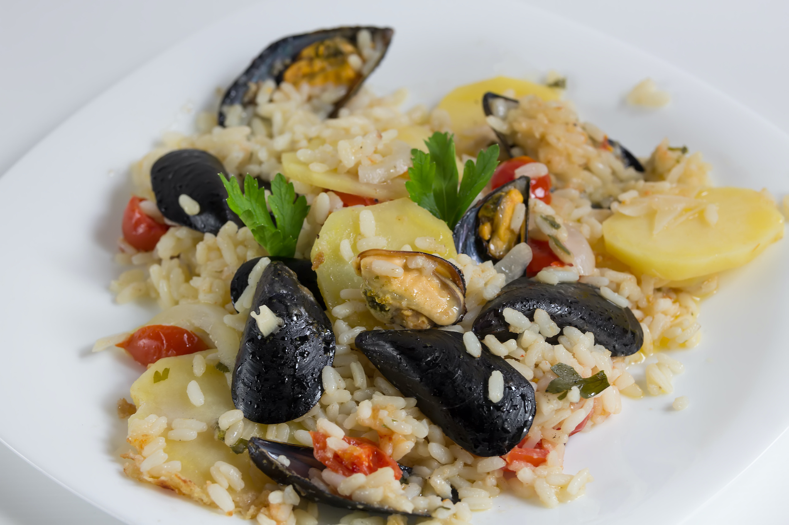
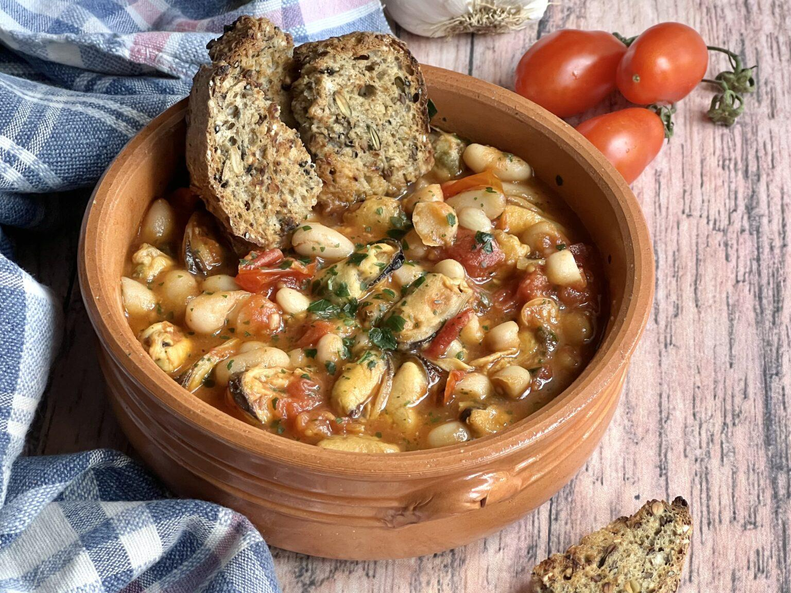
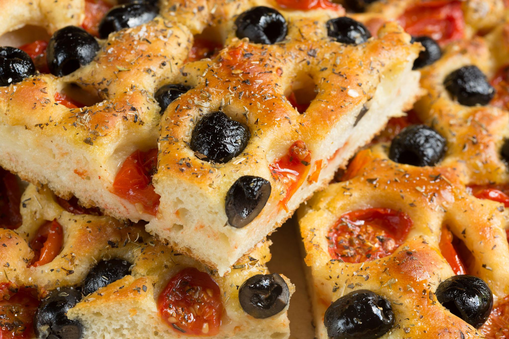
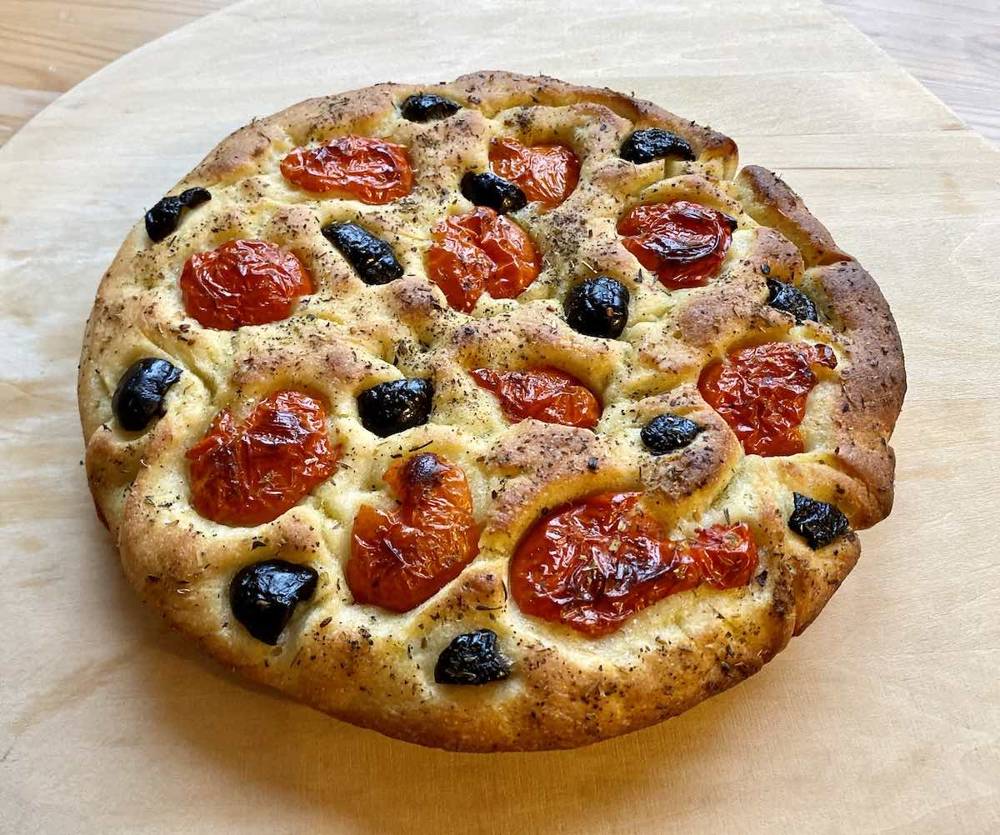
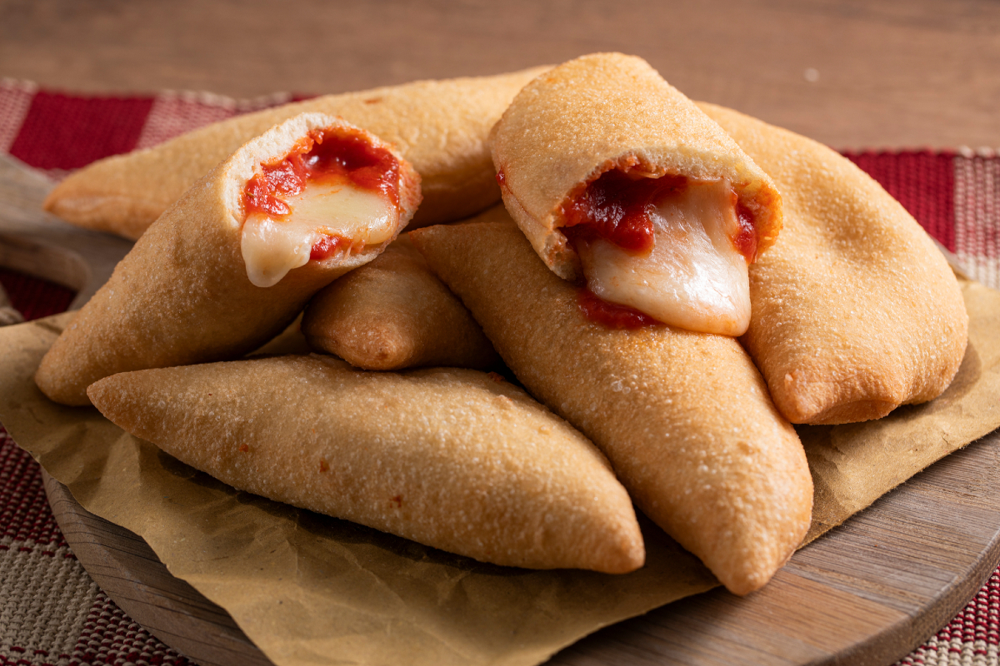
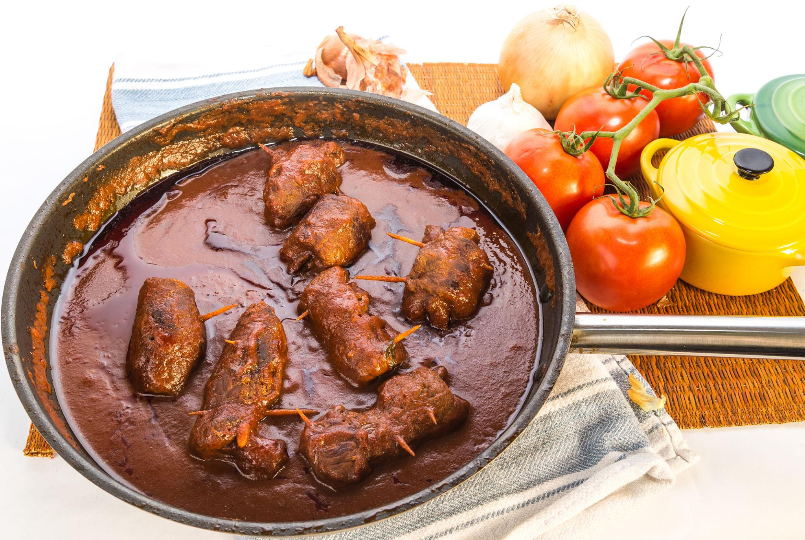
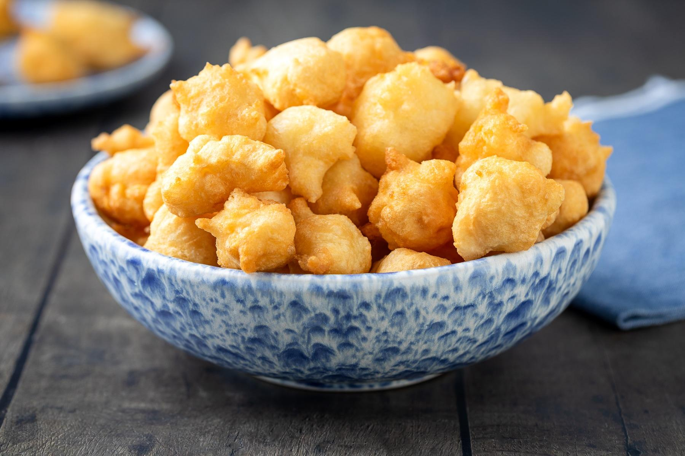

Primo
Orecchiette con Cime di Rapa
Il piatto simbolo della Puglia intera. Pasta fresca a forma di orecchia con cime di rapa ripassate in aglio, olio e acciughe.
La Puglia è la seconda regione italiana per produzione di olio d'oliva. La sua gastronomia è tra le più ricche del Mediterraneo: prodotti DOP e IGP, pasta fresca fatta a mano, formaggi unici, vini di carattere. Non è cucina di moda: è cucina di territorio, costruita in secoli di agricoltura e pesca, che mette al centro la qualità della materia prima.
Il piatto simbolo della Puglia intera. Pasta fresca a forma di orecchia con cime di rapa ripassate in aglio, olio e acciughe.

Riso, patate, cozze e pomodoro cotti lentamente in tegame di terracotta. Piatto povero della tradizione garganica.

Pasta fresca tirata a mano con ceci, rosmarino e olio. Piatto della tradizione contadina foggiana.

Brodetto dell'Adriatico con pesce fresco, pomodori e olio Dauno DOP.

Alta e morbida, con olive nere e pomodorini. Base dell'alimentazione quotidiana in tutta la regione.

Allevati nelle acque salmastre del Lago di Varano. Sapore iodato e delicato, tra i migliori d'Italia.

Alta, morbida, olive nere Caggia e pomodorini. Impasto con acqua di patate. La focaccia più famosa d'Italia.

Pasta di pane fritta, ripiena di pomodoro e mozzarella. Lo street food simbolo di Bari.

Involtini di capocollo ripieni di caciocavallo. Cotti alla brace nelle macellerie-fornello della Valle d'Itria.

Involtini di carne di cavallo o manzo cotti lentamente nel sugo di pomodoro. Domenica pugliese per eccellenza.

Impasto lievitato fritto. Dolci con miele o salate con acciughe. Tipiche del periodo natalizio barese.